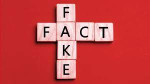

Once common in print, the prevalence of fake news has increased with the rise of social media, especially the Facebook News Feed. Political polarization, post-truth politics, confirmation bias, and social media algorithms have been implicated in the spread of fake news. It is sometimes generated and propagated by hostile foreign actors, particularly during elections. The use of anonymously-hosted fake news websites has made it difficult to prosecute sources of fake news for libel. In some definitions, fake news includes satirical articles misinterpreted as genuine, and articles that employ sensationalist or clickbait headlines that are not supported in the text. Fake news can reduce the impact of real news by competing with it; a Buzzfeed analysis found that the top fake news stories about the 2016 U.S. presidential election received more engagement on Facebook than top stories from major media outlets. It also has the potential to undermine trust in serious media coverage. The term has at times been used to cast doubt upon legitimate news, and former U.S. president Donald Trump has been credited with popularizing the term by using it to describe any negative press coverage of himself. It has been increasingly criticized, due in part to Trump's misuse, with the British government deciding to avoid the term, as it is "poorly-defined" and "conflates a variety of false information, from genuine error through to foreign interference". Multiple strategies for fighting fake news are currently being actively researched, and need to be tailored to individual types of fake news. Effective self-regulation and legally-enforced regulation of social media and web search engines are needed. The information space needs to be flooded with accurate news to displace fake news. Individuals need to actively confront false narratives when spotted, as well as take care when sharing information via social media. Inoculation theory shows promise in designing techniques to make individuals resistant to the lure of fake news, in the same way that a vaccine protects against infectious diseases.
